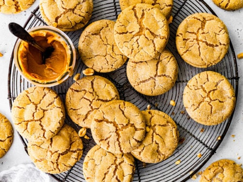

Peanut Butter Cookies

There's nothing better then biting into a warm peanut buttter cooki. They are simple but delicous and they are very easy to make.
Ingreditents
Peanut Butter Cookies
- 1/2 cup (108g) unsalted butter, room temp
- 2/3 cup (175g) creamy peanut butter
3/4 cup (155g) light brown sugar
- 3 tbsp (57g) honey
- 1 large egg
- 1 1/2 tsp vanilla extract
- 3/4 tsp baking soda
- 1/4 tsp kosher salt
- 2 tsp cornstarch
- 1 1/3 cup (175g) all-purpose flour
`
- 3 tbsp granulated sugar
- 3 tbsp sparkling sugar (or more granulated sugar)
- 3 tbsp rainbow sprinkles
- 1/4 cup dry roasted salted peanuts, uniform finely chopped
Instructions
Peanut Butter Cookies
- In a large mixing bowl using a hand or stand mixer with the paddle attachment, mix the butter and peanut butter until smooth.
- Add the brown sugar and mix again until smooth.
- Mix in the honey, egg, and vanilla extract.
- Then mix in the baking soda, salt, and cornstarch until well incorporated.
- Last, mix in the flour. Switch to a rubber spatula and mix by hand to ensure it’s fully mixed in.
- Cover the bowl and chill for at least 30 minutes. *30 minutes will provide a cookie that looks like the photos here, but chill for a couple hours and the cookie will bake a bit thicker. You can also chill the dough overnight. To do so, chill the dough for 30 minutes then roll and coat the balls, cover, and chill.
- Preheat the oven to 350F and line a large baking sheet with parchment paper.
- In a small dish, mix together the peanut sprinkles. Feel free to add more sprinkles or peanuts for a hefty coating.
- Using a large cookie scoop (3 tbsp worth), scoop the dough and roll in the coating. The dough should be soft and a tiny bit sticky.
- Place 4 cookies on the baking pan and bake for 12-14 minutes or until the edges are golden and the center looks pale, puffed, and slightly underdone.
- Immediately after pulling the cookies from the oven, use the inside curve of a fork to nudge in the sizes to create uniform cookies.
- Let the cookies rest on the pan for a couple minutes, then transfer to a cooling rack and continue baking the batch.
- The cookies are best at room temperature. Enjoy!